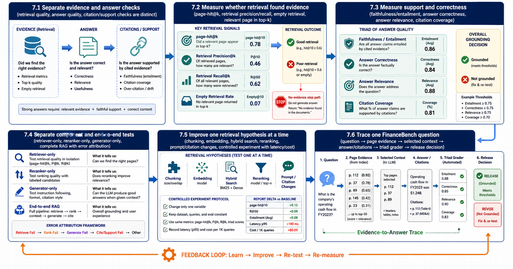
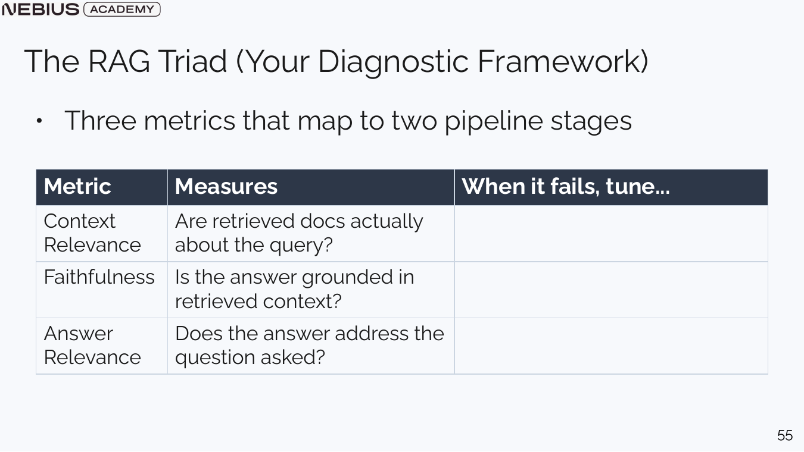
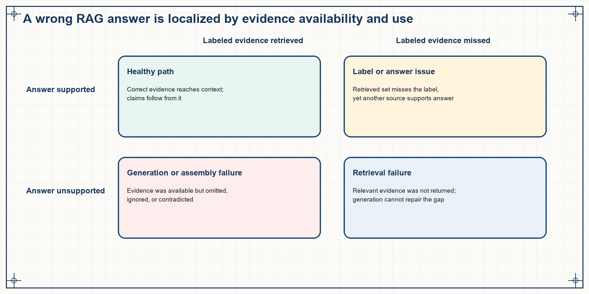
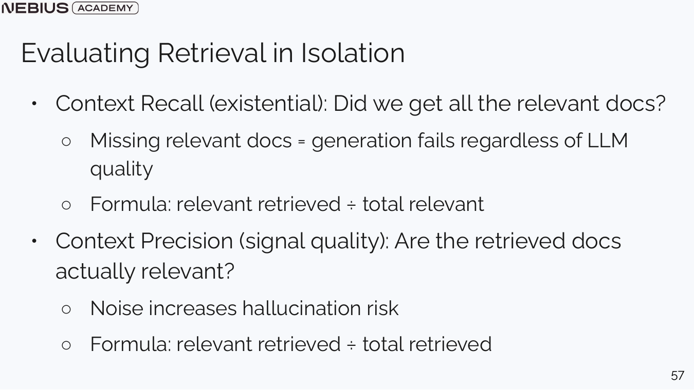
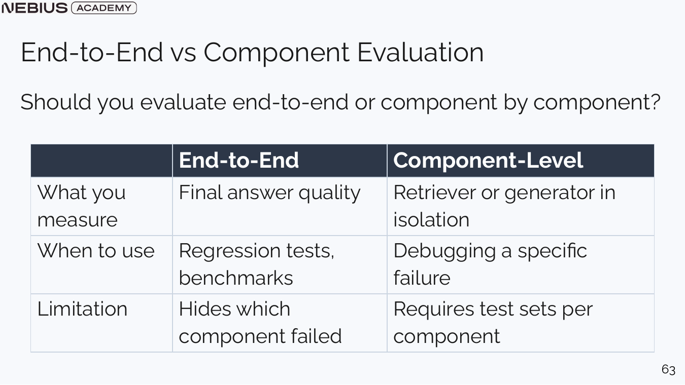

7 Evaluating answers against retrieved evidence
Chapter 6 built a pipeline whose traces preserve parsed sources, chunks, candidates, selected evidence, and the final answer. End-to-end correctness alone cannot identify which stage failed or which change should come next. RAG diagnosis evaluates retrieval and generation separately, then reconnects their evidence in controlled end-to-end experiments.

The diagnostic path identifies whether the retriever found the needed evidence, generation used it faithfully, and the complete answer met the task.
7.1 Evidence failures and answer failures
A RAG answer depends on both selected evidence and model behavior. One score can hide whether the context was irrelevant, the answer was unsupported, or the answer simply missed the user intent. The RAG triad names context relevance, faithfulness, and answer relevance as distinct diagnostic views.
Context relevance asks whether retrieved passages are useful for the question. Faithfulness asks whether the answer’s claims are supported by the supplied context. Answer relevance asks whether the answer actually addresses the question. The first belongs mainly to retrieval, the second to evidence use, and the third to the complete response.

A faithful answer can still be irrelevant, and a relevant answer can still be unsupported. Report the dimensions separately before combining them.
| Symptom | Likely failing layer | First evidence to inspect |
|---|---|---|
| Relevant source never appears | Document ingestion, parsing, chunking, query, or retrieval | Source coverage and ranked candidate list |
| Relevant source appears but is ranked low | Embedding, lexical signal, filters, or reranker | Per-stage scores and query rewrite |
| Correct evidence selected, unsupported answer | Generation prompt, model, or validator | Claim-to-chunk support and citations |
| Supported answer does not answer question | Task prompt or question interpretation | Question, answer-relevance rubric, and route |

The same wrong answer can arise because the evidence never appeared, because context assembly dropped it, or because generation ignored it. The retrieval trace and claim-support record locate the component where the failure began.
The RAG triad separates three relationships. Context relevance asks whether the selected evidence is useful for the question. Faithfulness asks whether the answer’s claims follow from that evidence. Answer relevance asks whether the supported answer actually addresses the requested task. The dimensions correspond to different components and therefore to different repair actions.
The dimensions also interact. Highly relevant evidence can still produce an unfaithful answer, and a faithful summary can still answer the wrong question. Missing evidence may cap the best possible faithfulness and completeness. A diagnostic record keeps query, ranked candidates, selected context, claims, citations, and final answer together so each relationship can be scored without reconstructing the run.
7.2 Retrieval evidence metrics
The triad identifies retrieval relevance as a separate system question. A retrieval metric needs labeled evidence units so it can compare the ranked result with the source that actually supports the answer. Retrieval hit at k, written Hit@k, measures presence, while reciprocal rank rewards an earlier first hit.
For one question, define the labeled evidence set \(E\) and the first \(k\) retrieved units \(R_k\). Hit@k is one when the sets intersect.
\[ \mathrm{hit}@k=\mathbb{1}(R_k\cap E\ne\emptyset) \tag{7.1}\]
Here, \(R_k\) contains the top-k retrieved source units, \(E\) contains one or more acceptable evidence units, and the indicator returns one for a nonempty intersection. The metric checks evidence presence but ignores how many irrelevant chunks were also returned.
Precision@k and recall@k reuse the same labeled sets but answer different questions. Precision measures how concentrated the top-k results are with relevant evidence; recall measures how much of all labeled evidence was recovered.
\[ \mathrm{Precision}@k=\frac{\lvert R_k\cap E\rvert}{k} \tag{7.2}\]
For retrieval precision, the numerator is the number of units shared by \(R_k\) and \(E\), and the denominator is the requested result count \(k\). Returning additional irrelevant chunks reduces precision even when at least one evidence unit was found.
\[ \mathrm{Recall}@k=\frac{\lvert R_k\cap E\rvert}{\lvert E\rvert} \tag{7.3}\]
For retrieval recall, the numerator is unchanged but the denominator is the number of labeled relevant units in \(E\). Recall depends on label completeness: an incomplete evidence set can make a useful alternative source look like noise.
Worked calculation - retrieval precision and recall at five
A question has four labeled relevant chunks. The retriever returns five chunks, three of which belong to the labeled evidence set.
- The relevant intersection contains three chunks.
- Precision@5 = 3 / 5 = 0.60.
- Recall@5 = 3 / 4 = 0.75.
Result: The top five contain 60 percent relevant material and recover 75 percent of the known evidence.
Interpretation: Increasing k may raise recall while lowering precision and consuming more context. The downstream generator determines whether the extra evidence helps or distracts.
Mean Reciprocal Rank (MRR) summarizes where the first relevant result appears.
\[ MRR=\frac{1}{N}\sum_{i=1}^{N}\frac{1}{r_i} \tag{7.4}\]
Here, \(N\) is the number of questions and \(r_i\) is the rank of the first relevant result for question \(i\). The reciprocal makes rank 1 contribute 1, rank 2 contribute 0.5, and later hits contribute progressively less. MRR ignores additional relevant results after the first.
Worked calculation - hit@5 and reciprocal rank
For three questions, the first relevant pages appear at ranks 1, 2, and 5.
- All three ranks are within 5, so every question has hit@5 = 1 and average hit@5 = 1.0.
- Reciprocal ranks are 1, 1/2, and 1/5.
- MRR = (1 + 0.5 + 0.2) / 3 = 0.567 after rounding.
Result: The retriever always finds evidence by rank 5, but the average first hit is not near the top.
Interpretation: Context order and a small top-k budget may still suffer. Hit@5 alone hides the difference between rank 1 and rank 5.

The evidence labels must use the same unit as retrieval. Page-level labels and chunk-level results require a documented mapping.
Label source
Evidence labels may come from an answer-bearing page, a cited ground-truth document, expert annotation, or a validated synthetic pair. Record how labels were produced; weak evidence labels make retrieval metrics look precise while measuring the wrong target.
7.3 Answer-support and correctness metrics
Retrieval metrics can show that the right page or chunk entered the candidate set. They cannot show whether the model read that evidence correctly or whether the final answer matches the ground truth. Generation evaluation therefore scores correctness, faithfulness, citation support, and answer relevance with the selected context held visible.
Correctness compares the answer with a ground-truth result or expert judgment. Faithfulness checks whether claims follow from retrieved evidence. Citation support checks the exact evidence attached to each claim. A model judge can help with open text, but deterministic numeric comparison and source-page checks should remain code-based where possible.
- Normalize the answer form only as much as the task permits, preserving units and qualifiers.
- Score exact or numeric correctness when a verifiable ground truth exists.
- Decompose longer answers into claims and identify the cited or supporting chunks.
- Grade whether each material claim is entailed, contradicted, or unsupported by the supplied evidence.
- Score whether the supported answer addresses the user’s actual question.
Ragas provides model-based RAG metrics that can automate part of this claim-support analysis. The current v0.4 collections interface accepts the question, response, and retrieved contexts explicitly and returns a score with optional reasoning.
Code example 7.1 - Ragas v0.4 faithfulness scores the answer against the contexts retained in the trace.
Code example: Code example 7.1 - Ragas v0.4 faithfulness scores the answer against the contexts retained in the trace.
import ragas
from ragas.metrics.collections import Faithfulness
faithfulness = Faithfulness(llm=evaluator_llm)
result = await faithfulness.ascore(
user_input=trace["question"],
response=trace["answer"],
retrieved_contexts=[
item["chunk_text"] for item in trace["retrieved"]
],
)
record["ragas_version"] = ragas.__version__
record["faithfulness"] = float(result.value)
record["faithfulness_reason"] = result.reasonThe evaluator model, Ragas version, metric prompt, and case-level reason belong in the experiment record. Faithfulness is a model-based proxy for support, so a human-audited subset and deterministic citation checks remain necessary. Earlier Ragas releases used SingleTurnSample and single_turn_ascore. Pin implementation examples to the installed version and verify the current API before use.
Faithfulness is context-relative
A statement can be true in the world but unfaithful to the supplied evidence. A grounded product must either retrieve support or label the statement as external knowledge; it cannot silently substitute model memory for retrieved reference data.
Generation evaluation begins at the claim level when answers contain several factual statements. Correctness compares a claim with a trusted answer or computation. Faithfulness compares it with the evidence actually supplied to the model. Citation support verifies that the cited unit entails the claim. Answer relevance then checks whether the supported claims resolve the user’s question.
Deterministic checks are preferable for exact numbers, identifiers, schema rules, and citation membership. Human or model judgment is useful for paraphrase, completeness, and open-ended support, but the judge receives the same bounded evidence and a calibrated rubric. Per-claim results expose partial support that a single answer-level label would hide.
7.4 Component-level and end-to-end failures
Retrieval and generation metrics expose local behavior. A product decision also needs the quality of the final response under the complete pipeline. Component evaluation diagnoses one stage, while end-to-end evaluation measures final output quality and can hide which specific stage caused an issue.

Use end-to-end tests for release decisions and component tests for repair decisions. Maintaining both prevents a local metric gain from harming the final answer.
A retriever can improve evidence hit while adding so much irrelevant context that answer quality falls. A stronger generator can mask weak retrieval on familiar questions by answering from weights. Compare the same question set with retrieved identifiers, context text, and final outputs stored together.
Ablation
This method applies to one RAG component or setting while the question set and other stages remain fixed.. It is useful when a metric moved and the responsible stage is unclear..
It works by hold the generator fixed while changing retrieval, or hold retrieved context fixed while changing prompt or model.. Ablation converts an end-to-end delta into evidence about which component caused it.
A limit to keep in mind: Components interact; the best isolated retriever may not produce the best context for a particular generator.
Component evaluation isolates a retriever or generator with controlled inputs. A retriever can be tested against labeled evidence without allowing a strong model to answer from memory. A generator can receive a fixed evidence set so faithfulness changes are not confused with retrieval changes. These tests explain where a failure begins.
End-to-end evaluation measures the product outcome under the real pipeline, including interactions that component tests cannot reproduce. Both views are necessary because local improvement can reduce total quality; for example, a broader retriever may raise recall while adding enough noise to lower faithfulness. Release evidence connects each component delta to the final outcome and tests their relationship directly.
7.5 One-change improvement cycles
Component metrics and ablations can locate a weak stage. Changing chunk size, top-k, query rewriting, reranking, prompt, and model together would make a better result impossible to attribute. A RAG improvement cycle states the metric expected to move, changes one factor, reruns the same questions, and records trade-offs.
A controlled RAG study can vary the generation prompt, generation model, top-k, or chunk size. A directional local hypothesis might predict that increasing k from 3 to 8 raises page-hit at k for multi-page answers while reducing faithfulness if irrelevant chunks enter the context. The resulting comparison retains the baseline and every changed setting.
| Change | Expected primary metric | Likely trade-off | Required trace evidence |
|---|---|---|---|
| Smaller chunks | More precise evidence matching | Incomplete claim context and more index entries | Chunk IDs, parent page, duplicate rate |
| Larger top-k | Higher evidence hit/recall | More context noise, cost, and latency | Ranked list, selected subset, token count |
| Hybrid retrieval | Better exact-term and semantic coverage | Fusion complexity and score calibration | Lexical/vector scores and fusion rule |
| Reranking | Earlier relevant evidence | Additional model latency and cost | Candidate set, reranker scores, final ranks |
| Grounding prompt | Faithfulness and citation support | Longer output or more refusals | Prompt version, citations, unsupported claims |
Query-dependent winners are expected. A chunk size that works for a numeric table lookup may not work for a narrative explanation. Report per-question or per-type results before declaring one global default.
A controlled improvement cycle states one hypothesis, the component it changes, the expected primary metric, and likely side effects before the run. The evaluation set, labels, and comparison protocol remain fixed unless a version change is explicitly part of the experiment. This design keeps a favorable result attributable to the changed factor.
Primary metrics alone are insufficient when changes trade recall for noise, quality for latency, or answer coverage for refusal safety. Guardrail metrics and slice results accompany the target metric. Repeated or resampled evaluation adds uncertainty when the observed delta is close to normal run-to-run variation.
7.6 FinanceBench evaluation trace
The experiment plan has separated settings, metrics, and trade-offs. A row-level trace now shows whether those definitions connect cleanly from source file to answer and aggregate report. The same financebench_id follows a question through baseline, retrieval, evidence-page grading, generation, judge scores, and experiment comparison.
- Load the question,
question_type, ground-truth answer, document link, and labeled evidence page. - Run naive generation and record response, refusal or confident-answer behavior, tokens, latency, and model version.
- Retrieve chunks and preserve document name, page, rank, retrieval score, and chunk text.
- Calculate page-hit@k by mapping retrieved chunks back to their source pages.
- Generate from the selected evidence and store cited pages plus the complete prompt version.
- Score answer correctness and faithfulness; retain judge explanations and model version.
- Append the row to the per-question spreadsheet and aggregate by question type.
- Repeat after one controlled setting change and compare with the baseline row.
Code example 7.2 - one experiment row keeps component and end-to-end evidence together.
Code example: Code example 7.2 - one experiment row keeps component and end-to-end evidence together.
experiment_row = {
"experiment_id": "chunk1000_k5_prompt_v1",
"financebench_id": case.financebench_id,
"question_type": case.question_type,
"question": case.question,
"ground_truth": case.answer,
"evidence_page": case.evidence_page,
"retrieved_pages": [item.source_page for item in retrieved],
"page_hit_at_5": int(case.evidence_page in retrieved_pages[:5]),
"rag_answer": rag_answer.text,
"correctness": correctness_score,
"faithfulness": faithfulness_score,
"input_tokens": usage.input_tokens,
"output_tokens": usage.output_tokens,
"latency_ms": elapsed_ms,
}Calculate aggregate correctness, faithfulness, and page-hit results from the recorded rows so the result remains reproducible. Question-type slices can show whether RAG helps domain-relevant questions more than metrics-generated or novel-generated questions.
Chapter checkpoint
RAG is measurable because retrieval identifiers, evidence pages, answer text, and scores share one record. Chapter 8 keeps that evidence path while adding deterministic control flow, tools, validation, and human decisions.